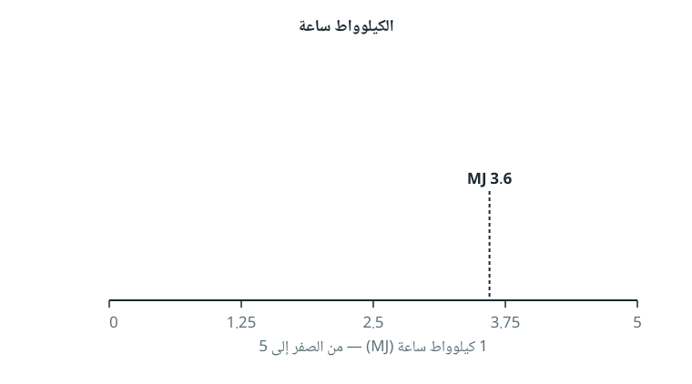

الكيلوواط ساعة
Kilowatt-hour
وحدة طاقة لا قدرة: الطاقة التي ينقلها جهاز قدرته كيلوواط واحد خلال ساعة كاملة، وتساوي 3 600 000 جول أي 3.6 ميجاجول، وهي وحدة فاتورة الكهرباء.
الكيلوواط ساعة وحدة طاقة كهربائية تساوي الطاقة المنقولة بقدرة كيلوواط واحد خلال ساعة واحدة، وهي الوحدة التي تُفوتر بها الكهرباء في معظم البلدان. وليست من وحدات النظام الدولي المتماسكة، بل وحدة مقبولة للاستعمال معه، فمقدارها مشتق من واط وثانية: 1000 W × 3600 s = 3 600 000 J = 3.6 MJ. والقيمة العملية لها في المحاسبة لا في الفيزياء: هي حاصل ضرب قدرة في زمن، فتُجمع على الشهر والدهر بينما القدرة لا تُجمع بل تُتوسَّط أو تُقرأ ذروةً. ومثال الفاتورة: سخان قدرته 2 kW يعمل نصف ساعة يستهلك 1 kWh أي 3.6 MJ، وضاغط 1500 W يعمل ثماني ساعات يستهلك 12 kWh أي 43.2 MJ، والشيئان مختلفان في القدرة والزمن ومتساويان في الطاقة عند التساوي في حاصل ضربهما.
كيف تعمل الظاهرة؟
الطاقة الكهربائية تُراكم لا تُقاس لحظيًّا في الفاتورة: العدّاد يضرب الجهد في التيار في كل لحظة فيحصل على القدرة، ثم يجمعها على الزمن، فما يقرأه هو تكامل القدرة لا قيمتها الآنية. ولهذا يظهر في الفاتورة رقمان مختلفان: كمية الطاقة بالكيلوواط ساعة، وأقصى قدرة مسحوبة في نصف ساعة بالكيلوواط، والثاني هو ما يحدّد سعة الكابلات والمحولات. وفي الأحمال الحثية يمرّ في الأسلاك تيار أكبر من الذي ينتج عملًا، فتُقاس القدرة الظاهرة بالفولت أمبير والقدرة الفعّالة بالواط، والفرق هو ما يجعل مقارنة العدّاد بالحساب النظري تحتاج معامل قدرة.
العلاقة بالأرقام
الوحدات أولًا: 1 W = 1 J/s من تعريف الواط، و1 kW = 1000 W = 1000 J/s، و1 h = 3600 s. فالضرب: 1000 J/s × 3600 s = 3 600 000 J، وبالقسمة على 10⁶ يصير 3.6 MJ. وبالتحويل إلى السعرات الحرجة: 3 600 000 ÷ 4184 = 860.4 kcal. وبالتحويل إلى جيجاجول: 3 600 000 ÷ 10⁹ = 0.0036 GJ. وللتحقق من حدّ الوحدة: kWh = kW × h = (kJ/s) × 3600 s = 3600 kJ = 3.6 MJ، فالبعد الزمني يُستهلك في الضرب ويبقى بعد الطاقة وحده. ومثالان: 2 kW × 0.5 h = 1 kWh، و1.5 kW × 8 h = 12 kWh = 43.2 MJ. وإذا وُلّدت هذه الـ12 kWh في محطة كفاءتها 40% لزمها 12 ÷ 0.40 = 30 kWh طاقة أولية أي 108 MJ.
مفاهيم متقاربة
الخطأ الأول في الاستعمال أن تُقارن فاتورتان بالكيلوواط ساعة وحدهما، فيُظنّ أن الاستهلاكين متكافئان في الأثر على الشبكة، والحال أن 1 kWh مسحوبة في ساعة تمرّ بقدرة 1 kW، والمسحوبة نفسها في دقيقة تمرّ بقدرة 60 kW فتحتاج معدّات أكبر. والخطأ الثاني أن تُستعمل kWh داخل معادلة فيزيائية بلا تحويل إلى الجول، فتنكسر تماسك الوحدات. والثالث أن تُعامل kWh حرارية كـkWh كهربائية في حساب الإكسيرجي، فالكهرباء كلها إكسيرجي بينما الحرارة عند 60 °س ليست كذلك.
حدود التطبيق
الوحدة تقيس الكمية لا التوقيت ولا القدرة، فلا تصلح لوصف حمل ذروة ولا لتحديد سعة محوّل. وهي غير متماسكة، فكل معادلة فيزيائية تحتاج تحويلها إلى جول قبل الإدخال. ولا تصف جودة الطاقة: كيلوواط ساعة من الكهرباء وكيلوواط ساعة من الماء عند 60 °س متساويان بالعدد مختلفان بالإكسيرجي. وتعتمد دقة القراءة على صنف العدّاد، وتختلف الفاتورة عن الحساب إذا كان الحمل غير خطّي أو معامل القدرة منخفضًا. وأخيرًا لا معنى لمقارنة kWh عبر مصادر مختلفة بلا ذكر كفاءة التحويل.

| الكمية | القيمة | المصدر |
|---|---|---|
| مقدار الكيلوواط ساعة بالميجاجول | 3.6 MJ | [1] |
| مقدار الكيلوواط ساعة بالجول | 3 600 000 J | [2] |
| مقدار الكيلوواط ساعة بالسعرات | 860.4 kcal | [1] |
| الطاقة الأولية اللازمة لـ12 kWh عند كفاءة 40% | 108 MJ | [1] |
المصادر
- 1 Guide for the Use of the International System of Units (SI), NIST Special Publication 811, 2008 Edition — NIST — National Institute of Standards and Technology (2008). nvlpubs.nist.gov/nistpubs/Legacy/SP/nistspecialpublication811e2008.pdf · اطُّلع عليه 2026-11-26
- 2 The International System of Units (SI), 9th edition — BIPM — Bureau International des Poids et Mesures (2019). www.bipm.org/documents/20126/41483022/SI-Brochure-9-EN.pdf · اطُّلع عليه 2026-11-26
استشهد بهذا المصطلح
الصيغتان مبنيتان من بيانات الصفحة نفسها: العنوان والتاريخ ورابط النسخة المنشورة.
الكيلوواط ساعة — Kilowatt-hour. (2026). ديوان المعرفة — انفراد. https://infiradev.com/diwan/terms/term-kilowatt-hour.html
@misc{term-kilowatt-hour2026,
title = {الكيلوواط ساعة},
titleaddon = {Kilowatt-hour},
howpublished = {{ديوان المعرفة — انفراد} — مرجع علمي عربي},
year = {2026},
url = {https://infiradev.com/diwan/terms/term-kilowatt-hour.html},
urldate = {2026-11-26},
note = {مراجعة علمية: hermes — مراجعة آلية بالتكليف 2026-11-26}
}
راجعه: hermes — مراجعة آلية بالتكليف 2026-11-26 · 2026-11-26 · آخر تحديث 2026-11-26